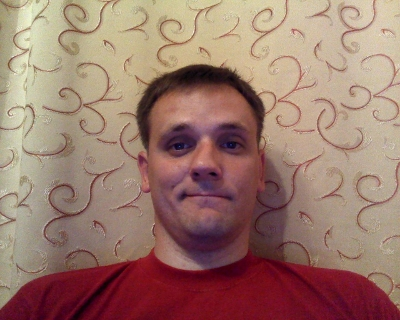

|  |
Юрий Жлоба Минск, Беларусь email: yzh44yzh@gmail.com skype: yzh44yzh |
Веб-разработчик: Erlang/OTP, Python, RabbitMQ, PostgreSQL, MySQL.
Open Source:
Автор курса "Эрланг на практике". Читал курс много раз в Минске, Москве, Днепропетровске и Ульяновске, в т.ч. в Wargaming.
https://www.hackerrank.com/yzh44yzh профиль на HackerRank.
http://yzh44yzh.github.io/ мой блог.
Ноябрь 2014 по настоящее время
Разработка и архитектура внутренних веб-сервисов компании.
Декабрь 2013 по октябрь 2014
Разработка REST-API для основного проекта www.tvzavr.ru, другие веб-проекты.
Май 2012 — Ноябрь 2013
Бэкенд для мобильных и браузерных многопользовательских игр.
Сентябрь 2006 — Май 2012
Главный проект -- линейка продуктов flashcoms.com -- решения для веб-коммуникаций и видеостримминга. Вел эти проекты 6 лет. Через мои руки прошли 4 мажорных релиза -- с 3-й по 7-ю версии.
Сентябрь 2004 — Сентябрь 2006
Сайты на РНР, виджеты и игры на Flash/ActionScript.
Июнь 2003 — Сентябрь 2004
Дизайн, html-верстка, сайты на PHP, Flash виджеты.
Участковый терапевт в поликлинике.
Начальник мед.пункта в военной части.
Белорусский государственный медицинский университет, Военно-медицинский факультет.
1995 — 2000
Военный врач, лечебное дело.